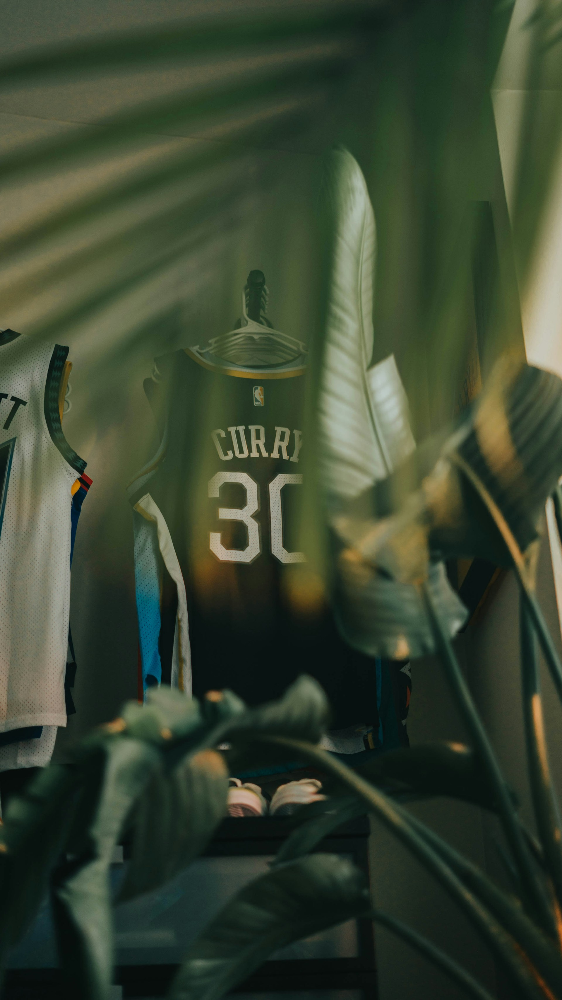

Memorable NBA Moments

The NBA has had many unforgettable moments throughout its history. These moments are one of the biggest reasons basketball is exciting to follow. A close playoff game, a championship, or an amazing individual performance can become something fans remember for years.
NBA Playoffs
The NBA playoffs are one of my favorite parts of the season because every game becomes more important. Teams compete in a series, and the pressure increases as they get closer to the NBA Finals. Playoff games can create memorable performances, close finishes, and unexpected results.
NBA Finals
The NBA Finals determine the league champion and are some of the biggest games of the season. I enjoy watching the Finals because the best remaining teams compete for a championship. Players have the opportunity to create moments that can become part of NBA history.
Why These Moments Matter
Memorable games and moments are a big part of being a basketball fan. People can remember where they were when they watched an incredible game or saw their favorite team win a championship. Those moments create excitement and give fans something to talk about long after the game ends.
That is what makes the NBA interesting to me. There is always another game, season, player, or moment that can become part of basketball history.